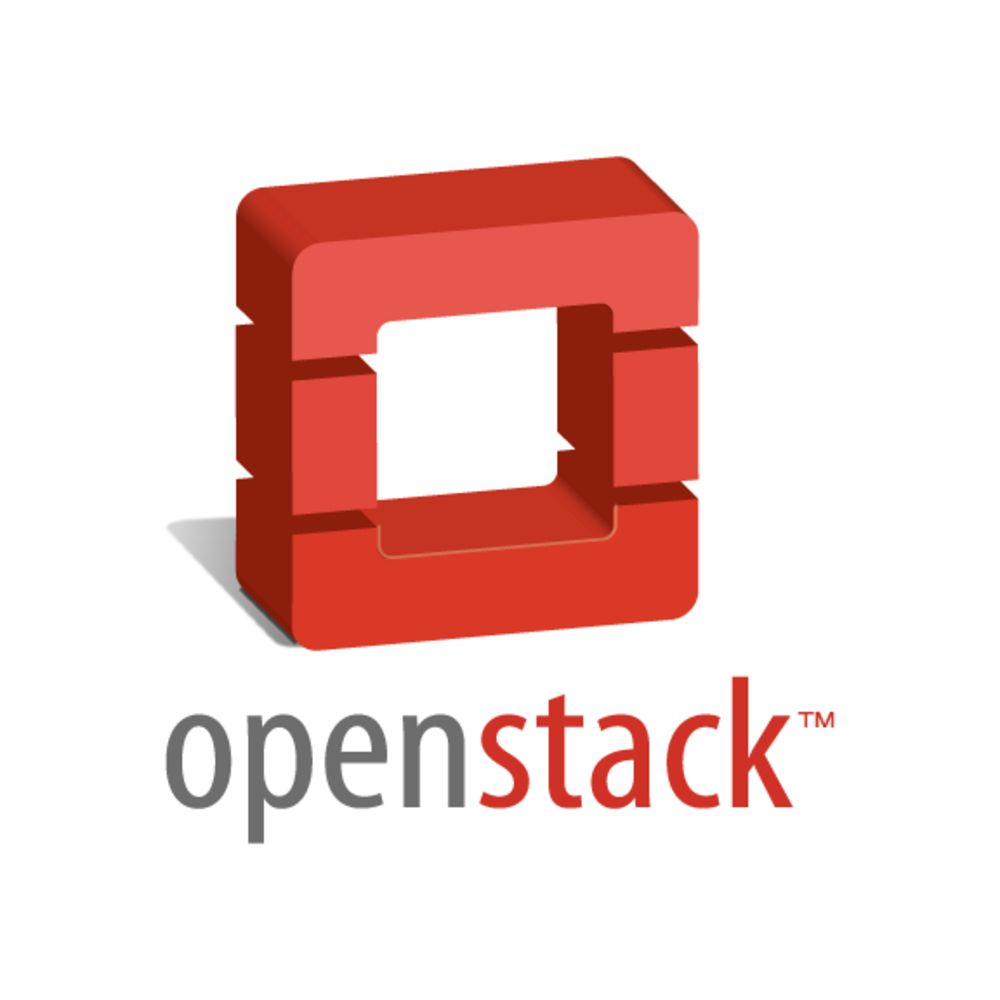
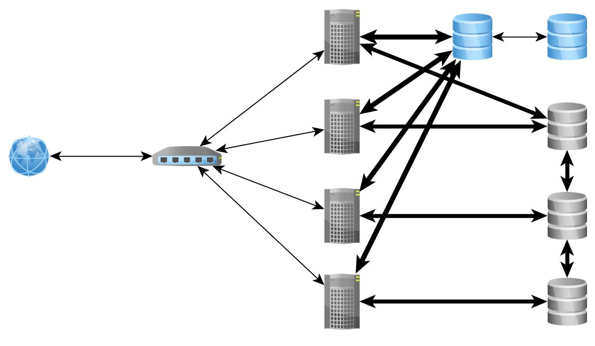
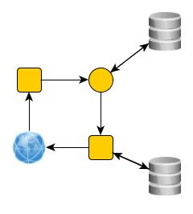
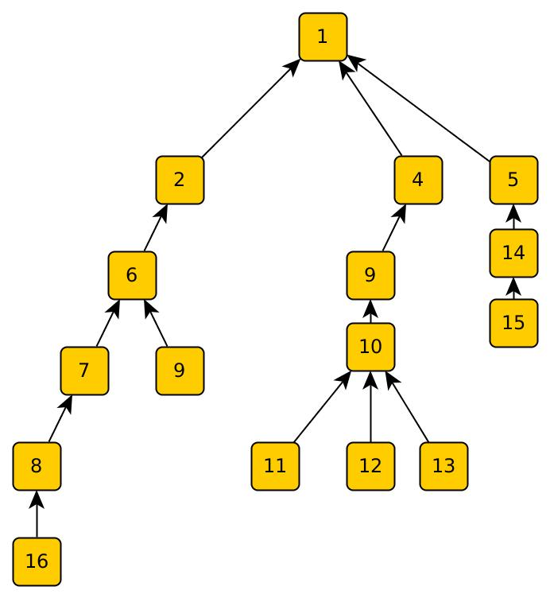
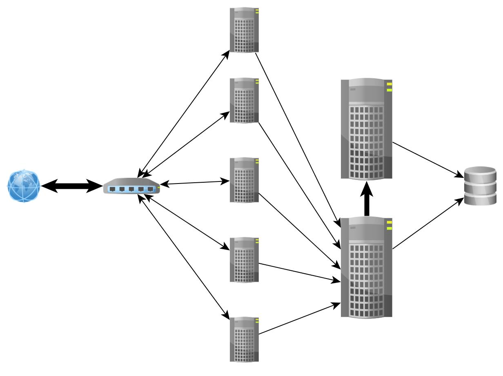
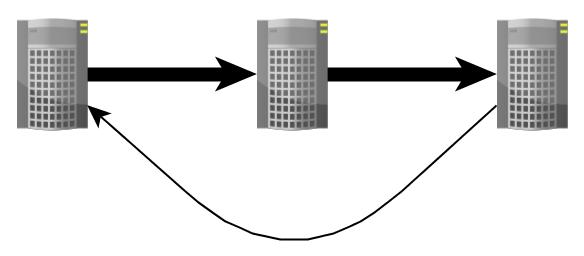

* Stateless сервервера * Многопоточный режим * Состояние в БД



* Производительность процессоров заметно растет * Процессоры уже очень быстрые * Особенно если писать эффективный код
* Сеть * Диск * Синхронизация потоков * Дело не только в ожидании
* > 20% Журнал отката/WAL * > 20% Блокировки * > 20% Управление буферами * > 20% Предвыборка данных * < 10% Полезная работа
* "Холодные" и "Горячие" данные * OLTP vs OLAP * Количество новых "горячих" данных ограниченно * <10k новых горячих данных в день на человек
* EC2 - $2.8 за 244Gb ОЗУ/час (~2k$/month) * Горячие данные помещаются в ОЗУ
* Данные в памяти одного сервера * Параллельная пост- и предобработка * Вся логика в одном потоке

* Сбои - это снова исключения * Репликация * WAL + data dump

* Сервера выстраиваются в "линию" * Все работают с "головой" * Новый сервер подключаентся к "хвосту" * Репликация с fork-копии
* http://raftconsensus.github.io/ * Выносится в отдельные процесс
* Втаскивание новой ноды и транзакции через fork * Особенности форка - замедление обоих процессов
* Cпособ использовать дополнительные ядра * Транзакционная память + RAM == * Транзакции + База
* Шардинг * Ручной * Тяжело * Не всегда эффективен
* Несколько потоков для сбора данных * Один поток для обработки транзакций в основной памяти * Несколько потоков для постобработки результатов * Disruptor - lock-free очередь с множеством писателей для обмена данными
* Надоедливые помощники на сайтайх * >10к пользователей * >1k помощников * 50к tps со старта
* VoltDB vs. MySQL, tpc-c - > ~100x * LMAX - >100k tps на одном ядре * Обычно ускорение ~100x
* + Скорость * + Простота и размер ядра системы * + Возможность переноса ядра на другой язык * - Сложное масштабирование * - Логика восстановления * - Состояние системы менее прозрачно
/